This project began when I discovered the wonderful world of mechanical keyboards.
I started looking into some 60% keyboards such as the Poker3, but the singular product that really caught my interest and brought me down this rabbit hole was the WhiteFox mechanical 65% keyboard created by matt3o. This keyboard was just what I was looking for, clean style and minimal design. I started looking into purchasing it which lead me to learn about MassDrop and the mechanical keyboard subreddit. This keyboard is a bit elusive, due to its limited production runs.
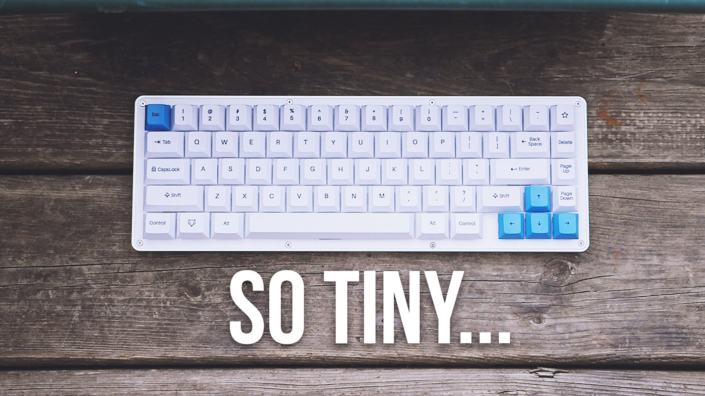
Eventually I gave up on the idea of this keyboard, but through the mechanical keyboards subreddit I had discovered the vast and expensive world of custom mechanical keyboards. There are many kits available. Generally, you pick a layout, pick a PCB, pick a case and top plate, pick your switches, and pick your keycaps. I priced out a few builds of these and, all in, I was looking around $200 to $300 CAD. A nice keycap set tends to be what will cost you the most, and this is true if you have a brand name gaming keyboard, a kit style keyboard, or you build one from scratch like I did. I was considering this for some time.
I realized that some of these pre-built PCB’s used the same chipsets as some Arduino boards. I have been playing around with Arduino for a while now, and I thought this would be a great project to learn some more C++ and Arduino coding. Searching around to see if others had built keyboards using an Arduino yielded quite a lot of information. One of the first inspirations was this article by Dave Cooper for Gizmodo. In it he gets a case laser cut from steel and acrylic, hand wires the switch matrix, and uses a Teensy 2.0 as the controller board. He used the popular TMK firmware and this guide from matt3o on Deskthority to compile the firmware for the Teensy. I am not yet comfortable compiling my own firmware from C (soon I will learn);, but if I could possibly do it all in C++ from the Arduino IDE I would be game for that!
So I decided to build my own keyboard from scratch using Cherry key switches and an Arduino (actually ended up using a Teensy, an Arduino compatible) as the controller. I figured that I understand switches and debounce, I understand the theory of a switch matrix although I have never implemented one, and all I would really need to figure out is the HID communication over USB. So I began. I wanted to do this partly to have a custom mechanical keyboard in the end, and partly as a hardware and software learning experience.
The first thing I did was order a cheap key switch tester from Banggood.com (Banggood is a Chinese online retailer similar in style to Alibaba). The one I got had Cherry MX Blue, Brown, Red, and Black switches. I already thought I would go with Blue switches as I like that clicky feel, but I wanted to compare the blues to a few others just to see. Out of those 4, Blue were by far the best for me.
Reading around and doing some planning I realized I needed to make some fundamental design decisions before I began. First thing that I wanted to do was to create a slightly non-standard layout. I really enjoy the size of a laptop keyboard, which is similar to a 60% style. I rarely use the function keys, especially on a desktop, but I do use most of the symbol keys as well as the arrow keys when I am writing code. Some 60% styles omit some of the symbol keys and arrow keys and move them to function layers. I could probably get on board with this but I really wanted these keys to be easily accessible. I settled on a layout that moved the tilde, backslash, backspace, and delete keys, as well as altering the second row quite a bit. I used a shorter 2u shift on the left rather than the standard 2.25u shift, which moved the whole row to the left slightly, but not enough to be awkward or uncomfortable. This gave me more room on the right to place a full size arrow cluster. I kept a 1u right shift key although I might also change this to something else in the future as I personally never use the right shift. I also added my own function keys on the bottom row (Both SUPER and HYPER i can just customize to anything) that I intend to use to access all the F keys as well as Insert, Pg Up, etc.
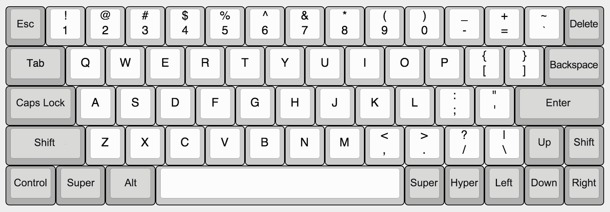
With this layout in mind, my options were limited as to what parts I could use. A lot of keyboard kits use a metal (sometimes plastic or PCB) top plate to mount the keys to and give the whole board rigidity. These pre-made parts wouldn't work with my new layout. I figured I could do without a top plate to start with and if I was ambitious in the future i could get a custom one made. Since I wasn’t going to use a top plate, I would need to mount the switches to a PCB instead of hand wiring them, so the PCB would give the board a bit of structure. Also I couldn’t use one of the popular PCB’s available such as the GH60 as the layout was slightly different. So that left me with two options for the PCB. I could design my own in software and have it manufactured by a company like OSH Park. This would give me the best quality board, but pricing this out it seemed to be around the $250 to $300 price range. A bit too steep. Another option I came across was these little Cherry MX breakout boards from SparkFun (https://www.sparkfun.com/products/13773). They are small boards designed to fit one Cherry MX switch. They have pass through connections along each side so you can connect many of them together in a matrix at the correct spacing for a standard keyboard. These sounded great! They are really meant for smaller projects it seems but there was nothing preventing me from connecting as many as I wanted together. They still weren’t cheap at about $1.76 USD each (I used 67 in total, so around $115 USD) but using them would give me full customization of the layout, and a little strength to hold the keyboard in shape until I devised a case solution.
So with the layout in mind, I also needed a set of keycaps. It seems like all the quality keycaps you find online are available only from group buys. From places like Massdrop or Pimpmykeyboard. You really need some patience for these group buys. The sales only happen occasionally and you need to follow the subreddit or other forums to figure out when. And then when a set you like is finally up for sale, it is effectively a pre-order that you are doing since the set has yet to be manufactured. So it takes a while… You can get the highest quality caps this way, and someday I may get a nice PBT set as well, this was just too expensive for me at the moment. I came across this company called WASD Keyboards. They are a fairly popular company that sells a basic mechanical keyboard line in a few sizes as well as switches, parts, and keycaps. The main product they have that I was excited about was their custom keycap sets. Basically you choose your layout, and then you can choose the plastic colour for groups of keys or each key individually, as well as the legend styles. You can also create your own layout file in Illustrator and upload it to get your own design printed on the caps! (Including full graphics if that is your thing). I used the keys from their full 104-key set to build my own 60% layout. My backspace key is the normal backslash key, my new backslash key is taken from the numpad, my left shift key is the horizontal 0 from the numpad, the right shift key is also a number from the numpad, and the small SUPER and HYPER keys come from the numpad as well. The things you have to keep in mind when poaching keys from elsewhere in the keyset is the row style that key is going to be and how wide the key is. I drew up my layout according to their instructions. I also decided to get the bulk of my switches from them since they have a pretty good price.
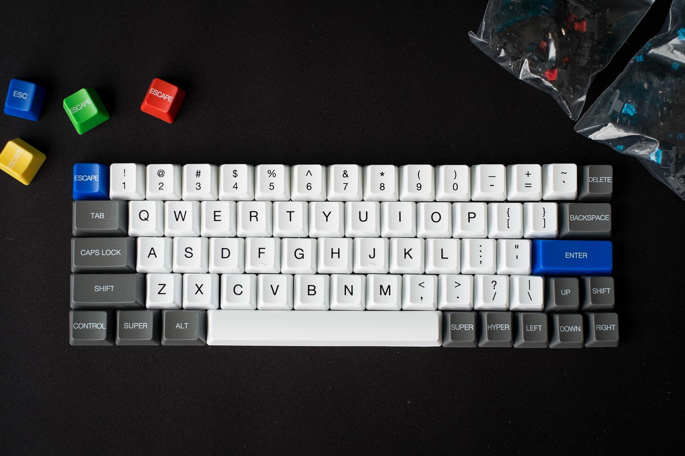
Before I ended up purchasing all the parts I wanted to build a little prototype first as a simple proof of concept to myself. From SparkFun, I ordered 3 Cherry MX Blue switches, 3 Cherry breakout boards, and a Teensy 3.2 board. Now that I thought the hardware would come together I wanted to get a handle on some of the coding. I built this simple 3 button matrix and proceed to program it to do many different things. The main things I wanted to get working was the matrix scan of the key states, sending the keystrokes to the computer, and getting the modifier keys to work properly. In the end I did use a different method to scan the keys, but it was still educational to build this first.
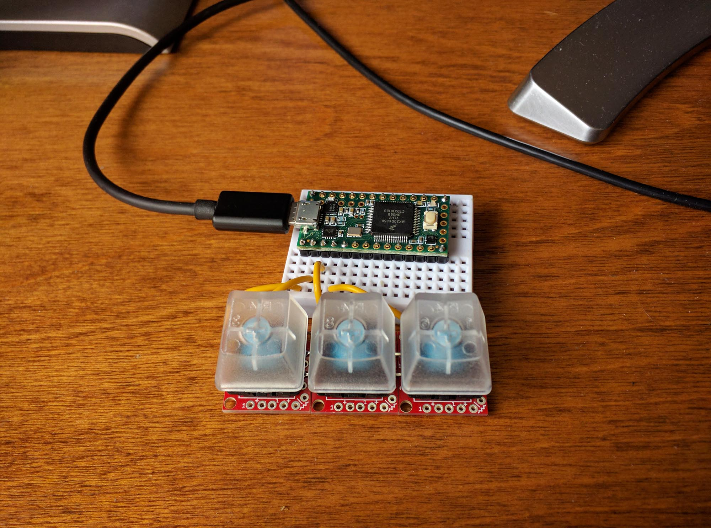
After that success I ordered everything else. PCB’s and diodes from Sparkfun, keycaps and switches from WASD Keyboards, and the Teensy 3.2 that I already had.
First thing to do was to lay out the PCB’s. This guide from Sparkfun was very helpful. I started by simply gluing them together in the desired layout before doing any soldering. This was so that the whole board will remain flat while aligning the boards. I also used a metal ruler to keep the rows straight. If you are using these same boards, do not rely on them being square, they are not. The first row I put together on the table but without the ruler and it came out as a big frown shape (or smiley shape, but I wasn't very happy about it). So make sure to use a straight edge and take your time. The difficult part was setting up the modifier keys. Since these boards only come in one size, any key that has a larger footprint needs to be spaced out from the rest. There aren't really any guides on the boards for you to do this accurately so I recommend just doing the math and taking accurate measurements. Any error that happens here will directly affect the key position and the final look and fit of the keys.
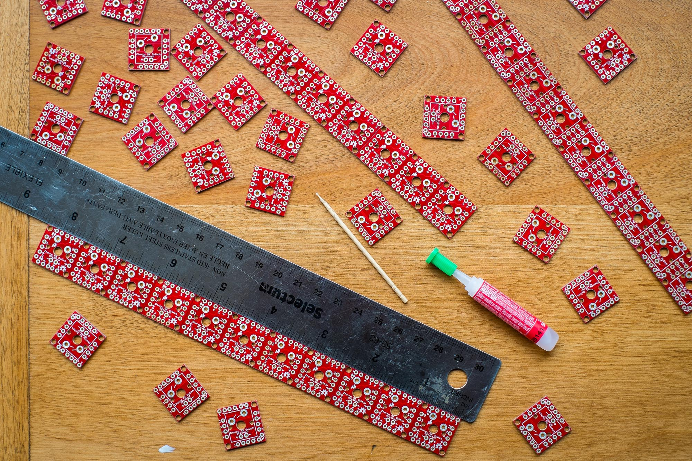
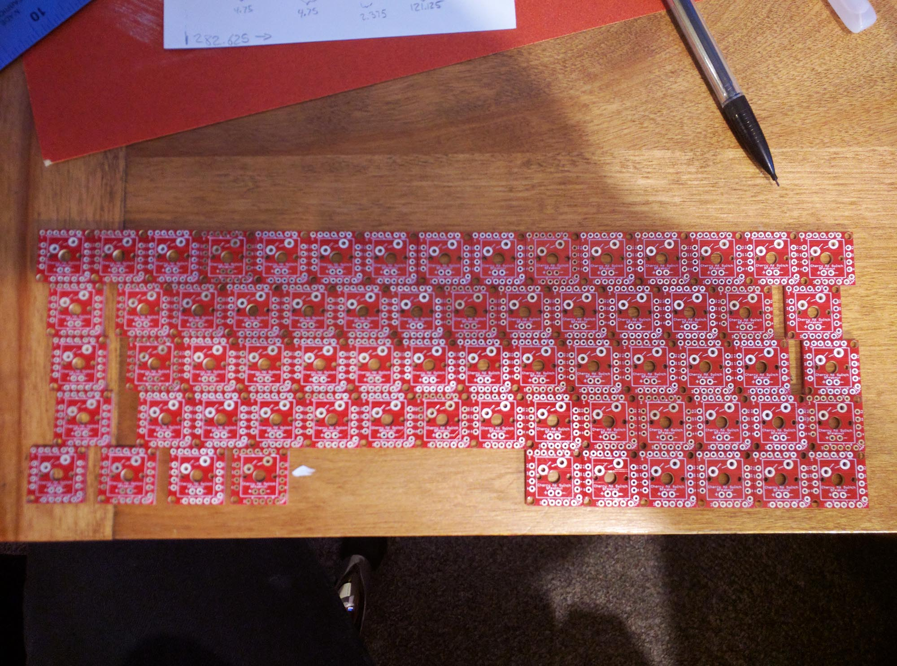
Once I had the whole PCB glued together it was time to begin soldering. I cut pieces of the legs off the diodes I bought as well as used some solid core wire to form small jumpers to connect the individual PCB’s together electrically. This is definitely the longest part of the project and took me quite a few hours. Just follow the hookup guide from SparkFun. Basically, 2’s are your rows and 1’s are your columns for the switches, - is the rows and + the columns for the in-switch LED’s. On my layout, the tilde key on the top row is electrically connected slightly different than its physical position, but I ended up with 5 rows and 14 columns. I soldered the traces for the in-switch LED’s. I didn’t intend to install LED’s but I wanted to do this to future proof the PCB and to add a bit more rigidity to the board.
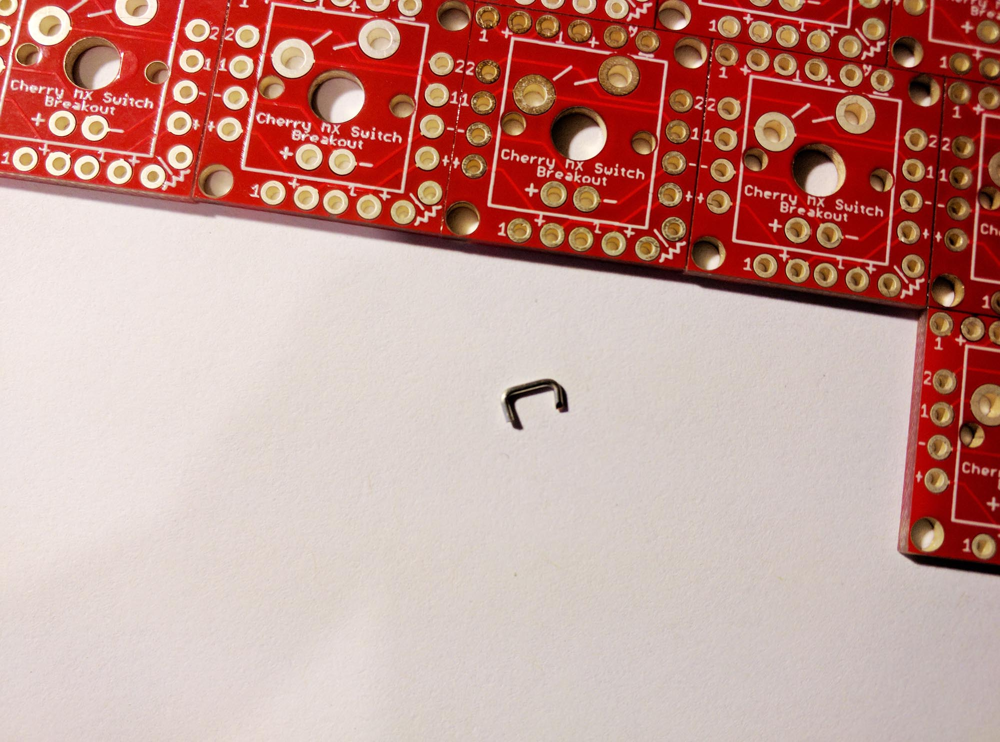
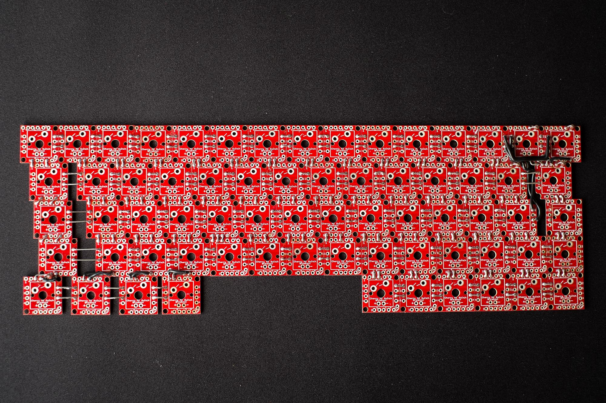
At this point I also soldered in the diodes for each switch. There is a small jumper that you have to cut on the bottom of each individual breakout board to connect the diode electrically, but I left this step for later.
Next solder in the switches. I actually used Cherry MX Reds for the modifier keys for some reason (I thought they might work better for keys you usually only hold down instead of click), but I’m not sure I would do that again. I would probably just use the same type of switch for the whole board. I just placed all my switches in and flipped the whole thing over. Each pad for the switches takes quite a bit of solder, but it's pretty straightforward thing to do. Once the switches were in I put the keycaps on to see if my alignment was good. The patience and attention to detail in the layout paid off! It looked pretty good! A couple keys seemed a bit off but this was because the switch wasn’t fully seated while it was being soldered, a simple fix. The custom printing on the WASD Keyboards keycaps I ordered looks great! And although these caps are made of ABS plastic and aren’t as thick as some others, the customization options and the price make these a fantastic choice! I may end up getting another set from them so I can switch up the theme of my board.
Wiring the matrix to the microcontroller is also straightforward. My layout has 5 rows and 14 columns, which means 19 pins are required on the microcontroller. I used pins 0 through 19, skipping pin 13 as this is connected to the debug LED on the microcontroller and I wanted to keep that free for future use. I wasn’t set on a final location of the microcontroller board yet so I temporarily soldered extra long wires to all the rows and columns and attached them, and the microcontroller, to a tiny breadboard (I also already had pins soldered to the microcontroller from previous prototyping).
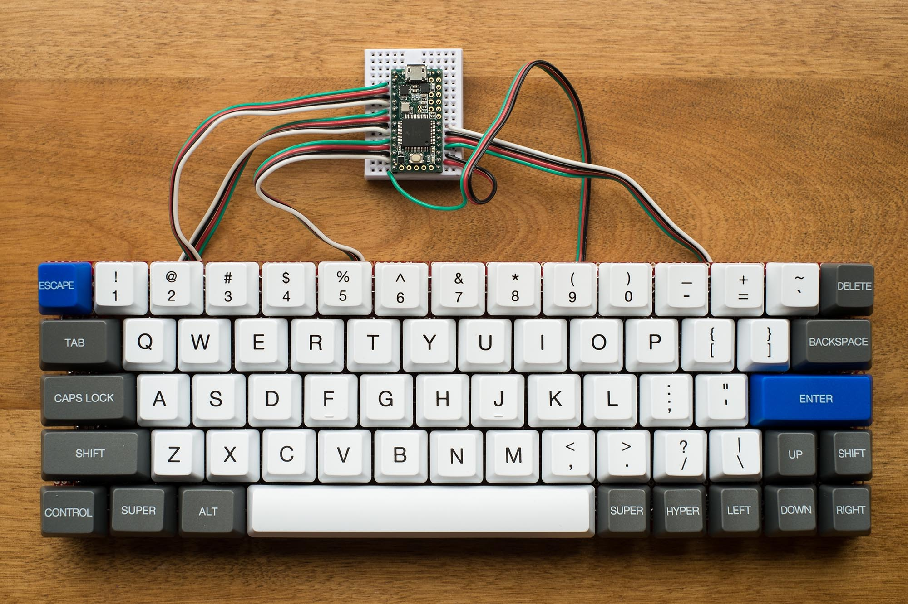
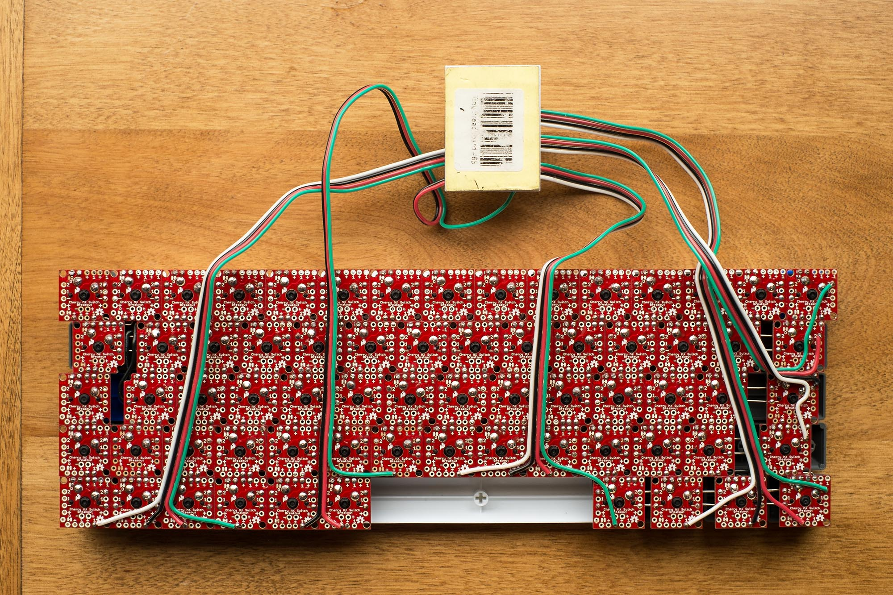
Now comes the software part. If you are comfortable compiling and flashing firmware you should follow the advice at the bottom of Dave Cooper’s post but I really wanted to try to do this myself from scratch using the Arduino IDE. I made a bit of progress on my own scanner (the part that scans all the keys to check their state, hopefully many many times per second) but eventually I settled on using some libraries. As usual they made things a lot simpler, and the Teensy 3.2 is so fast for this project that speed is not really an issue. I would still like to try to finish my own scanner eventually, but for now I used the USB Keyboard setting from Tools > USB Type within the Arduino IDE with the Teensyduino software installed. This, I believe, auto imports the common Keyboard.h library as well as the HID library as it allows you to use these keyboard functions and definitions without including those libraries in your code (similar to how the Arduino IDE auto imports the Arduino library giving you functions like digitalRead() and such). As well it alters the firmware on the Teensy upon upload so it appears to the computer as a HID device.
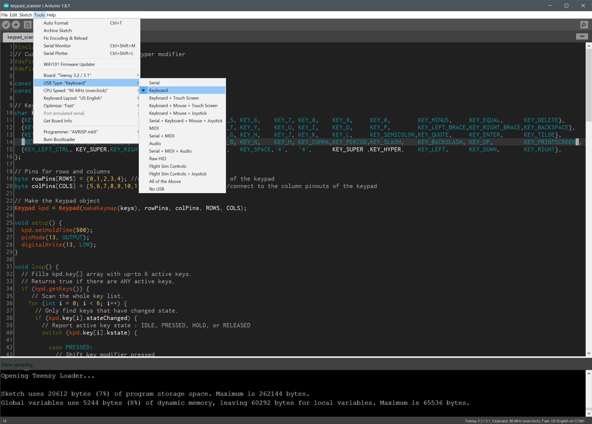
This page from PJRC, the makers of the Teensy, is a great reference to get started with sending keystrokes to your computer. I was going to use this and build my own scanner around it, but I later opted to use the Keypad.h library as the scanner. This guide written by alpinedelta on Instructables was alot of help, especially his example code he gives for his T1000 vintage computer project. With these resources I created a map of all my keys, and a simple algorithm to differentiate the functionality of the modifier keys. It works almost perfectly now! All of the labeled keys work as they should as well as Shift, Ctrl, and Alt functionality. I am still working on building my own function layers that will give me access to the F keys as well as Insert, Pg Up, etc. I have temporarily assigned volume up and down commands to the Super and Hyper keys until I can work them into a function layer. It took quite a bit of google searching to figure out the commands for media keys, but this post on the PJRC forum lays it out, it seems to work just fine with the current version of Teensyduino (1.35) by using the Keyboard.press() command, no other libraries required.
The code is available on GitHub and it requires you have Teensyduino installed as well as the Keypad library. Simply figure out your matrix layout, change the number of rows and columns, the pins used by the rows and columns, as well as the key map.
After using it for a while I wasn’t satisfied with the performance of the space bar using 2 switches and no stabilizers. It teters and presses one switch or the other depending on which thumb you use, but occasionally I would hit both switches giving me a double-space. The space bar is 6.25u long, so using the keycaps I already had, I used both the regular shift keys, one being 2.75u and the other 2.25u, as well as one of the unused bottom row modifier keys at 1.25u. I took the two switches out from the space and replaced them with 3 switches correctly spaced out for the key sizes. The split space bar works great now! The two larger keys making up the slit space and the other 1.25u key giving me another function key.
So this is the current state of the project. Some things I would still like to accomplish in the future:
From eBay seller sennin32 I purchased a generic 60% frosted acrylic case made for the Pok3r and other equivalent keyboards. I repositioned the Teensy controller so it aligned with the USB port hole on the case. I had to Dremel one of the standoffs off of the case for the controller to fit. I need to figure out a way to properly affix the board to the case as none of the mounting holes line up. I also took this opportunity to add some RGB LEDs to the bottom that I had around the house. The LEDs are strips of 16 from Adafruit (I have some strange rounded ones but I would recommend something like this, or a cheap equivalent from China). The LEDs are designed to run off 5v logic but i thought i would give them a try with the Teensy’s 3.3v and they seem to work fine. I haven’t tried and animations just solid colours. The acrylic case diffuses the light very well.
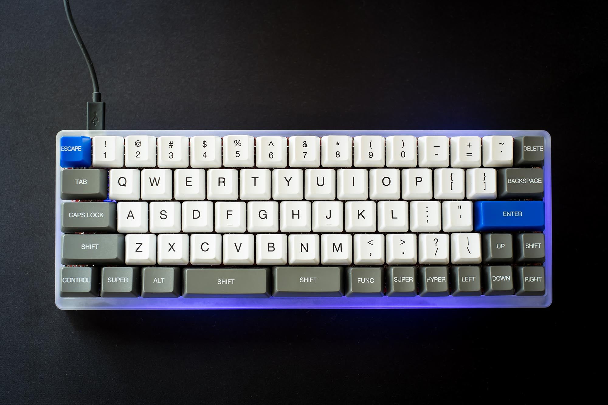
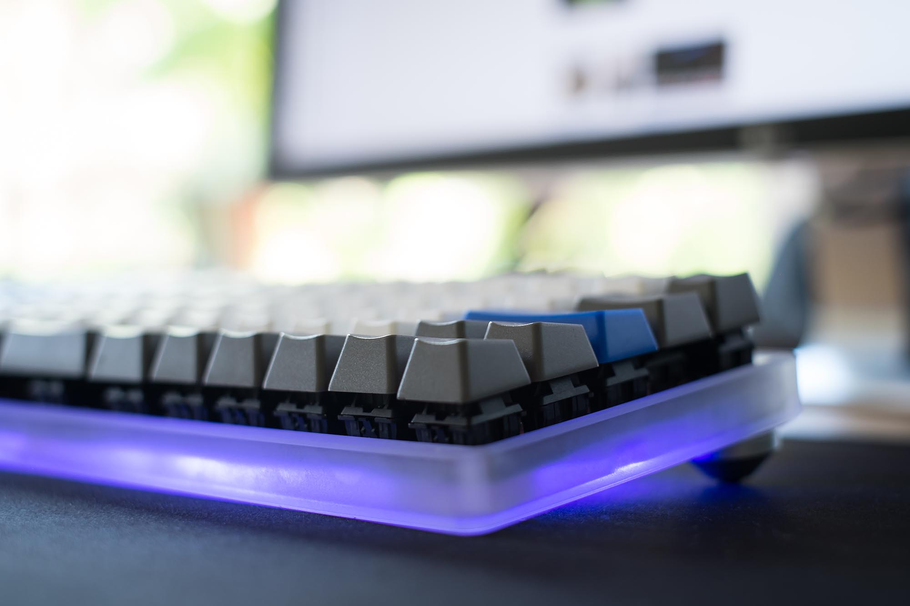
Some things I would still like to accomplish: